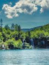
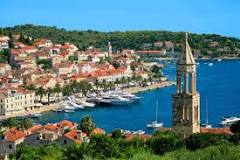
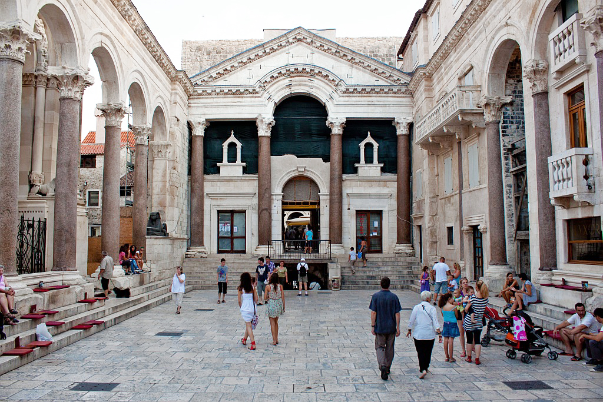
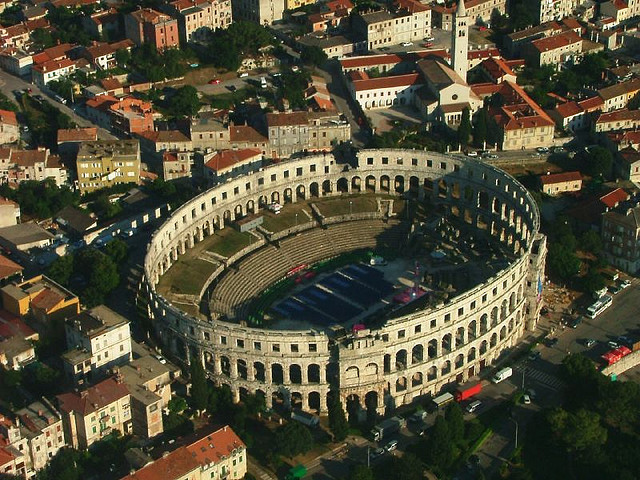

AUSTRIA
BELGIUMN
BULGARIA
CROATIA
CYPRUS
CZECH REPUBLIC
DENMARK
ESTONIA
FINLAND
FRANCE
GERMANY
GREECE
HUNGARY
ITALY
LATVIA
LITHUANIA
MALTA
NETHERLANDS
POLAND
PORTUGAL
ROMANIA
SLOVAKIA
SLOVENIA
SPAIN
SWEDEN
UNITED KINGDOM
- NEWS
-
OTHERS

Croatiaa country in Europe
| FACTS ON CROATIA | |
|---|---|
| Capital: | Zagreb |
| Political system: | Parliamentary Republic |
| Language: | Croatian |
| Currency: | Croatian Kuna HRK |
| PLACES TO GO WHEN IN AUSTRIA |
|---|
| Plitvice Lakes National Park |
| Hvar |
| Diocletian's Palace |
| The Spanish Riding School, Vienna |
| The Styrian Armoury (Landeszeughaus) |
| Kitzbüheler Horn |

Plitviče Lakes National Park is a 295-sq.-km forest reserve in central Croatia.

Hvar, a Croatian island in the Adriatic Sea, is best known as a summer resort.
| FACTS ON PLITVICE LAKES NATIONAL PARK |
|---|
| It's known for a chain of 16 terraced lakes, joined by waterfalls, that extend into a limestone canyon. |
| Walkways and hiking trails wind around and across the water, and an electric boat links the 12 upper and 4 lower lakes. The latter are the site of Veliki Slap, a 78m-high waterfall. |
| FACTS ON HVAR |
|---|
| Highlights of the port town Hvar include its 13th-century walls, a hilltop fortress and a main square anchored by the Renaissance-era Hvar Cathedral. |
| The island also features beaches such as Dubovica and inland lavender fields. Boat excursions serve the nearby Pakleni Islands, which have secluded beaches and coves. |

Diocletian's Palace is an ancient palace built for the Roman Emperor Diocletian
at the turn of the fourth century AD, that today forms about half the old town of Split, Croatia.
at the turn of the fourth century AD, that today forms about half the old town of Split, Croatia.

he Pula Arena is the name of the amphitheatre located in Pula, Croatia
| FACTS ON DIOCLETIAN'S PALACE |
|---|
| The Arena is the only remaining Roman amphitheatre to have four side towers and with all three Roman architectural orders entirely preserved. It was constructed in 27 BC – 68 AD[1] and is among the six largest surviving Roman arenas in the World. |
| Diocletian built the massive palace in preparation for his retirement on 1 May 305 AD. It lies in a bay on the south side of a short peninsula running out from the Dalmatian coast, four miles from Salona, the capital of the Roman province of Dalmatia. The terrain slopes gently seaward and is typical karst, consisting of low limestone ridges running east to west with marl in the clefts between them. |
| FACTS ON PULA ARENA |
|---|
| Highlights of the port town Hvar include its 13th-century walls, a hilltop fortress and a main square anchored by the Renaissance-era Hvar Cathedral. |
| A rare example among the 200 Roman surviving amphitheatres, it is also the best preserved ancient monument in Croatia.The amphitheatre is depicted on the reverse of the Croatian 10 kuna banknote, issued in 1993, 1995, 2001 and 2004 |